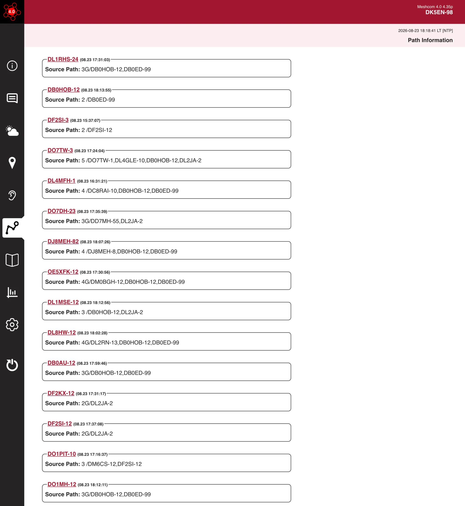
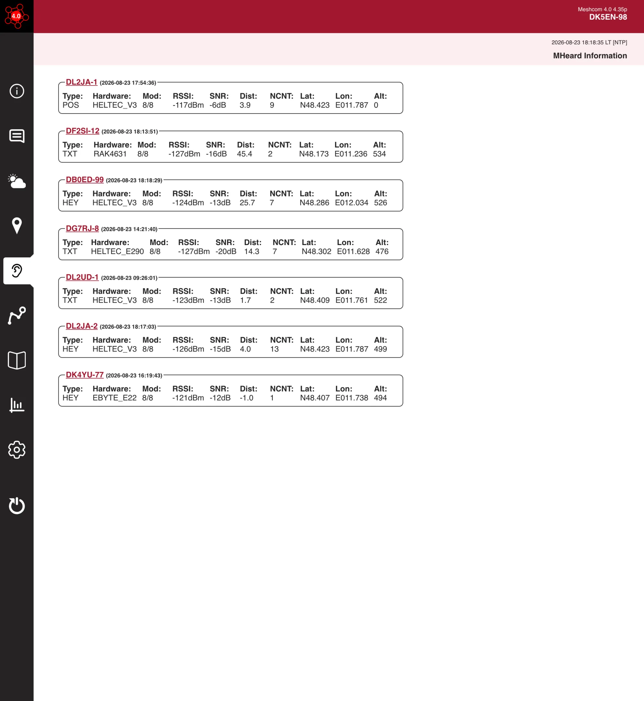
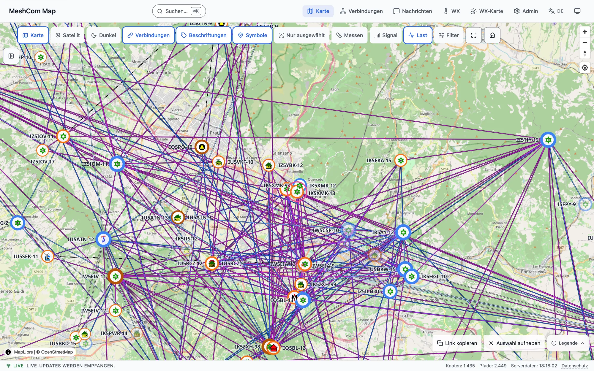
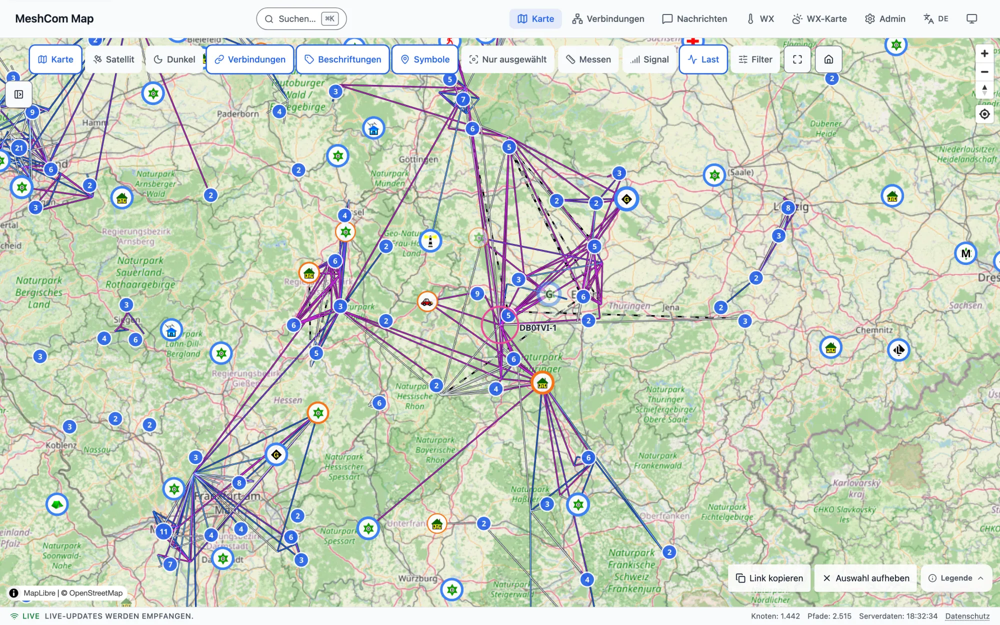
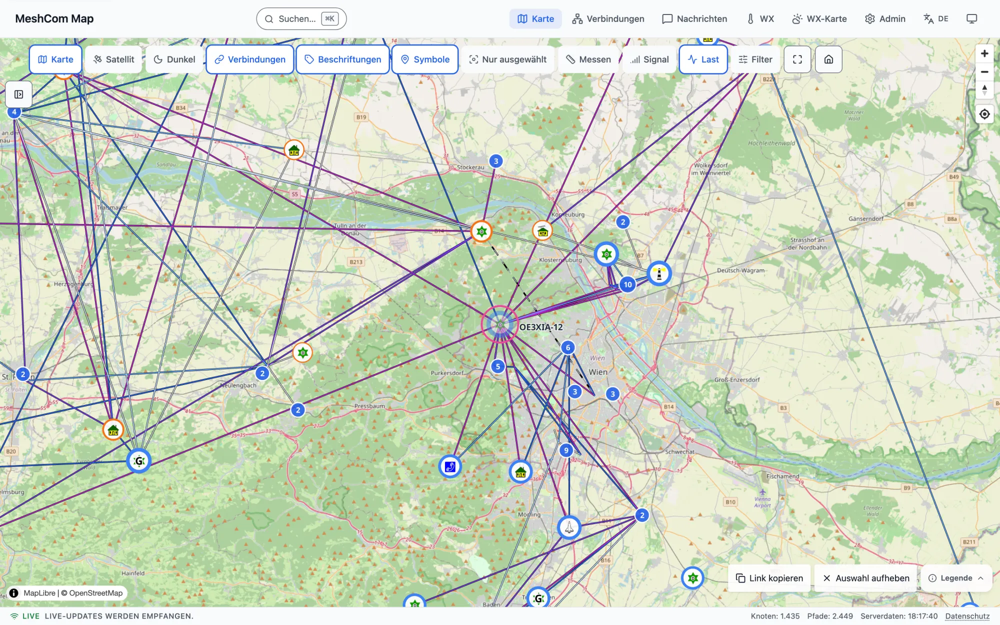

Kein Routing — und genau das ist richtig
Ein LoRa-Mesh im ISM-Band kann keine stabilen Routen lernen. MeshCom flutet — und lässt die Statistik gewinnen. Dieser Vortrag zeigt, warum das die richtige Wahl ist, wo es noch hakt, und warum MeshCom genau das Werkzeug ist, das EMCOMM braucht.
1 · Für das Dev-Team
Probabilistisches Routing ist im ISM-Band die richtige Wahl. Nicht routen — fluten, und netzbildenden Knoten Vorrang geben.
2 · Für das Dev-Team
Persönliche Nachrichten brauchen eine echte Transportsicherung — heute gibt es keine Zustellgarantie.
3 · Für EMCOMM
Robust, einfach, off-grid auf reinem LoRa. Der Backbone (Internet/HamNet) ist Brücke, nicht Träger: LoRa is all you need.
v4.35s (Release v4.35s.09.03-stability, Branch fork-main), Live-Netzdaten meshmap.oevsv.at vom 24.08.2026. Jede Verhaltensaussage ist gegen den Quellcode geprüft. Die Zeilenangaben in den ▸ Für Entwickler-Blöcken beziehen sich auf den Stand vom 23.08.2026, festgehalten im Tag archive/v4.35p_prio-20260903.Digitale Nachrichten über Funk sind 50 Jahre alt — wir stehen auf ihren Schultern
X.25 (CCITT)
Erste international standardisierte Paketvermittlung.
Von APRS blieb das Datenformat — die AX.25-Sicherungsschicht ließen wir zurück
1 · AX.25
Verbindungsorientiert. I-Frames mit Sendefolgenummern N(S)/N(R), Quittung per RR, Wiederholung per REJ und T1-Timer.
Transportsicherung
2 · Packet Radio
Digipeater mit Wegliste. Der Operator trägt die Zwischenstationen von Hand ins Adressfeld ein. Der Weg ist bekannt — weil ihn ein Mensch bestimmt.
Expliziter Pfad
3 · APRS
Nur noch UI-Frames. Unbestätigter Rundruf. Statt Weglisten ein Hop-Budget: WIDE2-2 wird von jedem Digi heruntergezählt.
Sicherung entfällt
4 · LoRa-APRS
Ein Hop zum iGate. LoRa als Modulation, der iGate speist ins Internet. Meist gar kein Funk-Relay mehr.
Stern statt Netz
5 · MeshCom
Wieder ein Netz. Jeder Knoten wiederholt, ein Hop-Budget begrenzt die Flut. Chat wird zum Kern, das Gateway bleibt optional.
Flutnetz ohne Sicherung
Was MeshCom übernommen hat
- Den Rundruf als Grundmodus — jede Nachricht geht an alle in Reichweite
- Das Hop-Budget als einzige Ausbreitungsgrenze (
max_hopstattWIDE2-2) - Die mitwachsende Pfadliste im Frame — jeder Relay hängt sein Rufzeichen an
- Das Gateway ins Internet, direkt aus dem iGate-Gedanken
Was auf dem Weg verloren ging
- Sendefolgenummern und ein Fenster — also die Erkennung, dass etwas fehlt
- Eine Quittung, auf die sich der Sender verlassen kann
- Ein Retransmit, das die Schicht selbst verantwortet
- Jedes Wissen über den Weg — bei APRS bestimmte ihn wenigstens noch ein Mensch
MeshCom erbt Position und Telemetrie — und macht Chat zum Kern
Geerbt von APRS
- Positionsmeldungen (APRS DDMM.MM)
- Telemetrie (APRS
T#, PARM/UNIT/EQNS) - aprs.fi-kompatibel über das Gateway
Der neue Fokus
- Gruppenchat und persönliche Nachrichten
- Über Handy und Laptop
- Offline-fähig, über LoRa
Der Umschlag ist neu
Das APRS-Datenformat reist heute in einem eigenen binären LoRa-Frame — nicht mehr in AX.25-HDLC. Das Format überlebt, die alte Sicherungsschicht nicht.
1200-Baud-FSK passt in 3,4 kHz — LoRa spreizt dasselbe Bit über 250 kHz
Ein Kanal im ISM-Band — geteilt mit allem, was dort funkt
Region EU8 — der Normalfall im DACH-Raum
Was das für die Zeit auf dem Kanal bedeutet
Eine einzige Nachricht mit max_hop=4 (Vorgabe; seit 4.35p.09.02 per --maxhop zwischen 1 und 6 wählbar) belegt den Kanal nicht einmal, sondern einmal je weiterleitendem Nachbarn und Hop.
Genau daraus entsteht der ganze Rest dieses Vortrags.
Hardware
Die Firmware baut über 30 Ziele. Verbreitet sind Heltec V3 (ESP32-S3/SX1262), TTGO T-Beam (drei Revisionen mit SX1276 / SX1262 / SX1268), T-Deck und T-Deck Plus (ESP32-S3), T-Beam Supreme (ESP32-S3) und WisBlock RAK4631 (nRF52840).
Die Board-Klasse entscheidet, wie viele Nachbarn und wie viele Duplikate sich ein Knoten merken kann. Dazu später mehr.
„(8) Übertragungsverfahren müssen mit allgemein verfügbarer Technik oder mit entsprechenden Kenntnissen und Fertigkeiten eine Wiederherstellung übertragener Inhalte zulassen. Der Amateurfunkverkehr darf nicht zur Verschleierung des Inhalts kodiert oder verschlüsselt werden; ausgenommen sind Steuersignale für Erd- und Weltraumfunkstellen des Amateurfunkdienstes über Satelliten, ferner Steuersignale (einschließlich Remote-Betrieb) oder von anderen fernbedienten oder automatisch arbeitenden Stationen.“
Klarstellung: Ein „33-cm-Band“ gibt es in ITU-Region 1 (Europa, Afrika, Naher Osten, Nordasien inkl. Russland) nicht — das ist eine Verwechslung mit dem US-amerikanischen 33-cm-Amateurfunkband bei 902–928 MHz (ITU-Region 2). In Region 1 existiert dort keine Amateurfunk-Zuteilung.
MeshCom routet nicht — es flutet und lässt die Statistik gewinnen
Es gibt im gesamten Quellcode keine Routing-Tabelle, keine Next-Hop-Auswahl und keine Metrik. Die einzige Stelle, an der die Weiterleitung überhaupt auf das Zielrufzeichen schaut, prüft eine einzige Frage: „Bin ich selbst gemeint?“ — wenn ja, konsumieren; wenn nein, wiederholen.
if (Ziel != mein Rufzeichen
&& checkMesh(...) // Mesh eingeschaltet?
&& bMeshDestination) { // kein Ping/Pong
if (max_hop > 0) { max_hop--; sende(); }
}
{ping} und {pong} werden von jedem
Zwischenknoten ausdrücklich vom Fluten ausgenommen — sie funktionieren nur zwischen direkten Funknachbarn, über genau einen Hop,
und werden auch vom Absender nicht wiederholt. Ein erfolgreicher Ping sagt: „wir hören uns direkt“. Er sagt nichts über einen Weg.
bMeshDestination = falseFür Entwickler — die neun Bedingungen, die ein Relay stoppen (Zeilennummern auf Stand v4.35p, Tag archive/v4.35p_prio-20260903)
| # | Bedingung | Stelle |
|---|---|---|
| 1 | Hop-Budget aufgebraucht (Dekrement vor dem Einreihen) | lora_functions.cpp:1209 / :1215 |
| 2 | Schleife — eigenes Rufzeichen steht schon im Quellpfad | lora_functions.cpp:1220-1230 |
| 3 | msg_id liegt schon im Duplikatspeicher (Dedup-Ring) | lora_functions.cpp:734, :1427-1456 |
| 4 | an mich selbst adressiert | lora_functions.cpp:813, :1206 |
| 5 | Pfad zu lang (nur auf Gateways) | lora_functions.cpp:1157, :1168-1170 |
| 6 | Typ nicht weiterleitbar (TEXT / POSITION / HEY; ACK läuft separat) | lora_functions.cpp:758 |
| 7 | Mesh abgeschaltet | via_functions.cpp:49-92 |
| 8 | TX-Ring voll und die Nachricht hat zu niedrige Priorität | txring_functions.cpp:284-354 |
| 9 | Ping/Pong — explizit ausgenommen | lora_functions.cpp:944-954 |
Korrektur gegenüber docs/prio-talk-flood-networking.md: Die dortige Bedingung „Server-Flag blockiert das Relay“ trifft heute
nicht mehr zu. msg_server steuert nur noch, ob ein Gateway ein Paket ins Internet einspeist — die Funk-Weiterleitung
hält es nicht auf. Ausserdem ist die Ring-Logik nach txring_functions.cpp ausgezogen.
Es gibt einen inaktiven Sonderfall: via_functions.cpp enthält ein statisches VIA-Gate im Stil klassischer Digipeater.
Es ist per Default aus (bVIA = false), muss von Hand konfiguriert werden und lernt nichts. Der einzige dynamische Ansatz
darin, den Nachbarn mit der größten Nachbarzahl als Zwischenhop zu wählen, ist auskommentiert („22.07.2026 – zum Test entfernt“).
Der Source-Path ist eine Spur, keine gelernte Route — so gewollt

Die Anzeige sieht aus wie eine Routing-Tabelle. Sie ist keine. Was dort steht, ist das Protokoll einer bereits erfolgten Reise: Wie ein einzelnes HEY-Bakenpaket dieses Absenders zufällig zu mir gefunden hat.
Was 3G/DB0HOB-12,DB0ED-99 bedeutet
| 3 | Anzahl Rufzeichen im Pfad des zuletzt gehörten HEY — also die zurückgelegte Hop-Zahl |
| G | Der Ursprungsknoten dieses HEY ist ein Gateway. Kein Hinweis darauf, dass der Weg über ein Gateway lief. Leerzeichen statt G heißt: kein Gateway. |
| DB0… | die Rufzeichen, die das Paket angehängt haben |
Und selbst wenn man sie läse: Ein Pfad, den ein Paket gestern genommen hat, ist keine Zusage, dass er morgen noch existiert. Genau deshalb halten wir es für den falschen Ansatzpunkt. Der bessere kommt auf Folie 15, „Der Vorschlag · Routing“.
Drei Wege, eine Nachricht loszuschicken
Broadcast — an alle
Ziel: * Priorität: 2 (HIGH) CSMA-Basis: 3000 ms Hop-Budget: 4
Das Ziel ist wörtlich das Sternchen. Jeder Knoten in Reichweite zeigt die Nachricht an und leitet sie weiter, wenn Mesh aktiv ist.
Gruppe — an eine Nummer
Ziel: 262 (1 … 99999) Priorität: 2 (HIGH) Abo: bis zu 6 Gruppen Kommando: --setgrc
Ein Knoten zeigt nur abonnierte Gruppen an — weitergeleitet werden aber alle. Das Abo ist ein Anzeigefilter, keine Netzfunktion.
Persönlich (DM) — an ein Rufzeichen
Ziel: OE1ABC-12
Priorität: 1 (CRITICAL)
CSMA-Basis: 3000 ms
Quittung: {987 angehängt
Exakter Byte-Vergleich inklusive SSID, Groß-/Kleinschreibung zählt. DK5EN erreicht DK5EN-98 nicht. Nur die DM bekommt eine Quittungsanforderung.
*.
Wer an 262 sendet, erreicht alle Knoten in Funkreichweite — aber angezeigt wird es nur bei denen, die 262 abonniert haben
oder gar keine Gruppe eingetragen haben.
Mesh an, Gateway optional — der Normalfall funkt ganz ohne Internet
Gateway — die Brücke ins Internet
- Schickt gehörte Pakete per UDP an den MeshCom-Server (Port 1990)
- Legt Pakete vom Server zurück auf LoRa
- Setzt dabei das Server-Bit, damit kein zweites Gateway dasselbe Paket erneut einspeist
- Sagt es seinen Nachbarn (dazu Folie 15)
Mesh — die Verlängerung per Funk
- Wiederholt fremde Pakete einmal, solange Hop-Budget übrig ist
- Betrifft nur das Weiterleiten. Empfangen, Anzeigen und eigenes Senden laufen unverändert weiter
- Mesh=AUS macht aus dem Knoten einen Endpunkt, keinen tauben Knoten
| Gateway | Mesh | Was der Knoten tut | Typische Rolle |
|---|---|---|---|
| AN | AN | Volle Brücke Funk ↔ Internet und Funk-Relay | Klassischer Standort-Knoten auf dem Berg |
| AN | AUS | Speist ein und aus, verlängert die Funkstrecke aber nicht | iGate im dichten Stadtgebiet |
| AUS | AN | Reines Funk-Relay ohne Internet — Werkszustand | Der Normalfall zu Hause |
| AUS | AUS | Empfängt und sendet nur für sich selbst | Insel · Handgerät · Testaufbau |
BEAT), aber keine Stelle im Code wertet dessen Ausbleiben aus. Ein Gateway,
dessen Serververbindung stillschweigend tot ist, hält sich weiterhin für ein Gateway.
last_upd_timer wird nur zur Diagnoseausgabe genutzt (command_functions.cpp:5124)Heute erdrückt der Status-Verkehr die Nutzlast
vs. Nutzlast/Chat (MSG = 10/h)
Wenn MSG-Traffic wächst: schon bei ×100 (1.000/h) wird Chat spürbar; bei ×500 (5.000/h) konkurriert Chat direkt mit dem Status-Overhead.
Trickle bremst die Baken — schon heute 53 % weniger HEY

Die ganze Nutzlast einer HEY-Bake
R21;
Mehr steht nicht drin. Die eigene Nachbarzahl, sonst nichts. Keine Position, keine Hardware, kein eigenes Statusfeld — diese Angaben reisen im generischen Rahmen jedes Pakets mit.
Jeder Knoten, der die Bake weiterreicht, hängt seinen eigenen Messwert an:
R21;9,71,-7;12,65,-9; — je Hop ein Schnappschuss aus Nachbarzahl, RSSI und SNR.
appendHeySignalReport() aprs_functions.cpp:1124-1135Trickle ist längst aktiv — kein Papier
Die HEY-Rate ist nicht fix. Nach RFC 6206 startet sie bei 30 s, verdoppelt sich bis 15 min und wird ganz unterdrückt, sobald der Knoten 2 konsistente Nachbar-Baken gehört hat.
Kleben viele Knoten aufeinander, wird die Luft dicht

Heute würfeln alle gleich — der Zufall entscheidet, nicht die Wichtigkeit
| Prio | Was | Basis | Slots |
|---|---|---|---|
| 1 | ACK und persönliche Nachricht | 3000 ms | 10 × 35 ms |
| 2 | Gruppe und Broadcast | 3000 ms | 10 × 35 ms |
| 3 | Mesh-Relay (fremde Pakete) | 4500 ms | 10 × 35 ms |
| 4 | Position | 5500 ms | 10 × 35 ms |
| 5 | HEY-Bake | 5500 ms | 10 × 35 ms |
Basis + Zufall(0…10) × 35 msAb dem 2. Versuch
Basis × 5/6, ab dem 3. Basis × 2/3, ab dem 4. nur noch 100 ms Rapid-Fire ohne Jitter, bis der Kanal frei ist. Der Backoff wird also unter Last aggressiver, nicht defensiver. Ein Jitter auf den Rapid-Fire (100 ms + Zufall(0…3) × 35 ms) ist Teil von Stufe S.
Der Sendepuffer
Kein FIFO. getNextTxSlot() nimmt zuerst die höchste Priorität, und erst bei Gleichstand den ältesten Eintrag.
Läuft der Ring voll, wird nicht blind verworfen. Es weicht der älteste Eintrag der niedrigsten Priorität. Ist die neue Nachricht selbst die unwichtigste, fliegt sie raus.
Der Kanal ist meistens belegt, und dann wird der Takt schneller
Vor jedem Senden prüft CAD den Kanal, bei Belegung ein zweites Mal gegen Fehlalarme. Ist der Kanal belegt, wartet der Knoten
nicht länger, sondern kürzer: Basis, dann 5/6, dann 2/3, ab dem 4. Fehlversuch fix 100 ms ohne Zufallsanteil. Die Zahl der Versuche ist
nicht begrenzt (MAX_CAD_WAIT ist definiert, wird aber nirgends gelesen). Das ist der CAD-Sturm: Wird der Kanal frei,
feuern alle wartenden Knoten im selben 100-ms-Fenster ineinander, innerhalb der 28-ms-Blindzone des CAD. Eine Nachricht verlässt den Ring
nur durch Senden, durch Verdrängung bei vollem Ring, am Ende ihres Wiederholbudgets, oder als HEY-Relay nach 3 Minuten Alter (seit 4.35p.09.02).
aller Sendeversuche fanden den Kanal belegt — gemessen an 5 Knoten über 16 h, bis zu 27 CAD-Wiederholungen für ein Paket.
cad_attempt++ nur bei bestätigtem Busy), lora_functions.cpp csma_compute_timeout_prio(), configuration_global.h CSMA_MAX_ATTEMPTS 3, CSMA_RAPID_RX_MS 100Nicht jeder Knoten ist gleich — netzbildende brauchen Vorrang
Ameisen wählen keinen Weg, sie riechen ihn: Wo viele gelaufen sind, liegt Duftstoff, und der zieht weitere an. Das Gegenteil von Routing: lokale Regeln, globale Ordnung, für ein Flutnetz die richtige Denkweise. Riechen kann unser Knoten seit 4.35p.09.02, nur merken noch nicht.
Was wir gern hätten — und was fehlt
Die Duftspur wäre: Wie viel Verkehr läuft tatsächlich über diesen Nachbarn?
Die Rohdaten dafür liefert der Knoten seit 4.35p.09.02 selbst. Mit --setlog on schreibt er zu jedem
Empfang den vollständigen Pfad, RSSI, SNR und das Dedup-Verdikt, zu jedem Frame die Relay-Entscheidung mit Grund, zu jeder eigenen Sendung
Wartezeit, Warteschlangentiefe und CAD-Versuche, und alle fünf Minuten eine Statuszeile mit Kanalauslastung. Wie viel Verkehr über welchen
Nachbarn läuft, lässt sich daraus offline exakt ableiten, ohne Umweg über den Server.
Was noch fehlt, ist die Verdichtung im Knoten: eine Häufigkeit je Nachbar, die sich summiert und auf die die
Sendelogik zugreift. Die MHeard-Tabelle bleibt ein Schnappschuss, jeder neue Empfang überschreibt den alten. Die Zähler im Knoten sind global
je Prioritätsklasse (STAT-Zeile), nicht je Nachbar. Das ist der Schritt von Stufe 0.
Was der Knoten stattdessen heute schon messen kann
Nicht „wo läuft viel“, sondern „wie allein wäre mein Nachbar ohne mich“. Diese Zahl liegt seit v4.35n in jeder HEY-Bake: die Nachbarzahl, die der Nachbar selbst meldet.
Netzwichtigkeit = Σ 1 / NCNachbar i
- Nachbar meldet 1 → er hängt zu 100 % an mir → Beitrag 1,0
- Nachbar meldet 20 → er hat reichlich Alternativen → Beitrag 0,05
Von 1 auf 2 Nachbarn halbiert sich der Beitrag: das ist der Unterschied zwischen „einziger Weg“ und „eine Alternative“. Von 10 auf 11 ändert sich fast nichts. Genau so soll es sein.
Stadt, Berg, Stern: Wichtigkeit ist nicht Nachbarzahl
Viel Last, wenig Abhängigkeit. Jede seiner Quellen hat 7 bis 31 andere Hörer. Fällt er aus, bleibt niemand unversorgt. Seine Last ist Verkehrsdichte, kein Dienst.

Nur 14 Nachbarn — aber die meisten davon haben kaum Alternativen. Auf drei seiner Abschnitte hängen 188, 176 und 159 verschiedene Quellstationen. Fällt er aus, zerfällt die Region.

Viele Nachbarn und viele davon abhängig. Der höchste Wichtigkeitswert im gesamten vermessenen Netz. Genau so ein Knoten darf nicht hinter einem Blatt in der Warteschlange stehen.
Persönliche Nachrichten haben heute keine Zustellgarantie
Die Anforderung
DK5EN-98>OE1ABC-12:Servus, 73{987
- Dreistellig, ohne schließende Klammer
- Dieselbe Nummer wie die unteren Bits der msg_id (0…999)
- Nur bei echten DMs. Gruppe und Broadcast bekommen keine
Die Antwort
OE1ABC-12>DK5EN-98:DK5EN-98 :ack987
- Ein ganz normales Text-Frame, Priorität 1
- Ziel auf exakt 9 Zeichen aufgefüllt, dann
:ackNNN - Wird durch das Mesh geflutet wie jede andere Nachricht — erreicht den Absender also auch über mehrere Hops
%-9.9s:ack%03iDONE, kein Timer). Geht dieses eine Paket auf dem Rückweg verloren — Kollision, ein Zwischenknoten mit
Mesh=AUS, Hop-Budget knapp, asymmetrische Reichweite —, dann erfährt der Absender nie, dass seine Nachricht
angekommen ist. Obwohl sie ankam.
Wo eine DM heute verschwinden kann
- TX-Ring voll: verdrängt nach Priorität. Seit 09/2026 meldet der Knoten das dem Absender („QTA NOT SENT“), wiederholt aber nicht.
- Hop-Budget aufgebraucht, bevor das Ziel erreicht ist
- Die Quittung geht auf dem Rückweg verloren (kein Retry)
own_msg_id[]überläuft — eine spät eintreffende Quittung findet ihren Eintrag nicht mehr- Empfänger ausgeschaltet — niemand hebt die Nachricht auf
- Der Schleifenschutz kappt in ungünstiger Topologie den einzigen Rückweg
Und niemand prüft, wer da sendet
Was heute fehlt
- Keine Verschlüsselung der Nutzlast, und das bleibt so: § 16 Abs. 8 AFuV verbietet sie im Amateurfunk
- Keine Authentifizierung — das Rufzeichen ist frei behauptbar
- Die FCS ist eine additive Prüfsumme, kein CRC und kein MAC
- Gefälschte Rufzeichen und gefälschte Quittungen sind in Funkreichweite möglich
Warum das für EMCOMM zählt
Solange niemand die Herkunft einer Nachricht prüfen kann, taugt das Netz nicht für verlässliche Lagemeldungen. Integrität und Authentizität sind eine der drei roten Zellen im EMCOMM-Abgleich (Akt V).
Gleiche Baustelle wie die Zustellsicherung: beides betrifft die persönliche, verlässliche Nachricht — nicht die Bake.
Persönliche Nachrichten brauchen eine echte Transportsicherung
Baken dürfen verloren gehen — die nächste kommt in 15 Minuten. Eine persönliche Nachricht darf das nicht. Heute kann der Absender nicht unterscheiden, ob sie nie ankam oder ob nur die Quittung verloren ging.
Was heute fehlt
- Die Quittung wird nie wiederholt — ein verlorenes Paket, und der Nachweis ist weg
- Das Scheitern nach 3 Versuchen wird nicht gemeldet
- Späte Quittungen finden ihren Eintrag nicht mehr, wenn
own_msg_id[]übergelaufen ist - Niemand hebt etwas auf — weder Knoten noch Server
Was eine Sicherung leisten muss
- Zustellnachweis, der einen einzelnen Paketverlust übersteht
- Drei klar unterscheidbare Zustände für den Nutzer: zugestellt · gescheitert · noch offen
- Duplikaterkennung beim Empfänger, damit Wiederholungen nicht doppelt erscheinen
- Eine Chance für Empfänger, die gerade aus sind
Lösungsrichtung — in dieser Reihenfolge
- 1. Die Quittung selbst wiederholen, wie das Original: 3 × 40 s statt einmal
- 2. Endzustand an App und Display melden, auch das Scheitern
- 3. Den Nachweis-Speicher von Baken und Positionen entkoppeln, damit er nicht überläuft
- 4. Ablage am Gateway für abwesende Empfänger — der Server sieht ohnehin schon alles
- 5. Erst danach über Sequenznummern und Fenster reden
Der Absender hebt auf — eine Outbox, die 24 Stunden nicht lockerlässt
Kein Speichern im Mesh, kein Server-Postfach: Die Nachricht wartet beim Absender, bis der Empfänger erreichbar ist. Zwischenknoten bleiben zustandslos — das Netz bleibt ephemeral, nur der Ursprung trägt Verantwortung.
Outbox am Absender
- 5 Slots, max. 3 offene je Ziel-Rufzeichen, Haltezeit 1–72 h (Default 24 h)
- Einstellbar über WebGUI und Serial (
--storetime,--msgstore) - Puffer in der WebGUI sichtbar: Zustand, Versuche, Sent-at / Delivered-at
- Zugestelltes bleibt gekürzt stehen — Nachweis statt Speicherfraß
- Drei Endzustände, auch gemeldet: zugestellt · gescheitert · offen
Zweistufiges Retry + Probe
- L1 (existiert): 3 × 40 s, gleiche msg_id — schützt die Nachbarschaft
- L2 (neu): +10 / +30 / +60 min, dann stündlich — aus der gemessenen Hop-Latenz abgeleitet (30 s median, 286 s p99 je Hop)
- Jeder Versuch mit frischer msg_id — Duplikatspeicher halten alte ~40 min fest
- Vorher eine winzige
{prb}-Probe statt 180 Byte auf einen toten Pfad - Empfänger erkennt Wiederholungen am Inhalts-Hash: quittiert erneut, zeigt nicht doppelt
Quittung v2
:ackNNN;H=…;F=R— kein neuer Frame-Typ, nur längere Nutzlast- H: SHA-256-Hash über den zugestellten Inhalt — Integritätsstempel (signieren, nicht verschlüsseln)
- F=R + Server-Bit der Quittung ⇒ „HF only“-Badge: nachweislich ohne Internet-Gateway zugestellt — konservativ, nie zu viel behauptet
- Die Quittung wird 3 × 40 s wiederholt statt einmal gesendet
toInt()) ignoriert den Suffix,
Apps sehen ohnehin nur das binäre 0x41 — und alte Knoten relayen {prb} als gewöhnlichen Text.
Hardware-Gate: nur ESP32-S3 und RAK4631 (~2 kB RAM). Classic-ESP32 hat nach den RAM-Kürzungen vom August nur wenig Luft und bleibt vorerst außen vor.
Die Statistik gewinnen lassen — die Transportsicherung macht den Rest
| Stufe | Inhalt | Ändert Verhalten? |
|---|---|---|
| 0 | Nur beobachten: Wichtigkeit rechnen und loggen | nein |
| 0.5 | Duplikatspeicher nicht vergrößern, sondern nach Zeit altern lassen. Die Messung über 48 Knotenstunden zeigt: 100 Einträge reichen, ab 500 verwirft der Ring echte Nachrichten. | ja, risikoarm |
| S | Sturmschutz: Rate-Limit je Quelle. Der Rückstau zum eigenen Absender (QRS/QRT/QTA, Quittung je verlorener Nachricht) ist seit v4.35p.09.02 ausgeliefert; das Limit für fremde Quellen fehlt noch. | teilweise |
| 1a | Wichtigkeits-Slots in einem Cluster | ja, begrenzt |
| 1b | Ausrollen auf die Flotte, Gate entscheidet | ja |
| 1c | Optional auch Positions-Relays | ja |
| 2 | Relay-Unterdrückung — erst nach vermessener Stufe 1 | ja, heikel |
--impslot off schaltet die Differenzierung jederzeit ab, unabhängig vom Qualitäts-Gate.
auto überlässt die Entscheidung dem Gate: mindestens 60 % der Nachbarn mit bekannter Nachbarzahl,
eigene Tabelle nicht übergelaufen, Knoten mindestens eine Stunde in Betrieb.
Was wir dazusagen müssen
- Der Hebel ist kleiner als er klingt. Die Differenzierung wirkt zunächst nur auf Text-Relays — 3 bis 41 pro Stunde gegenüber rund 3.800 Baken und 3.800 Positionen. Das sind unter 1 % des Relay-Volumens, bis Stufe 1c kommt.
- Ein einzelner Knoten kann alles überfahren. Am 22.08.2026 sendete IU4KCH-26 in einer Stunde 5.912 Baken (Vorstunde: 9). Gegen so etwas hilft keine Backoff-Reihenfolge, sondern nur die eigene Stufe S.
- Unterdrückung ist schon einmal schiefgegangen.
commit 60ea7d8lief produktiv, hungerte Blattknoten aus und wurde zurückgenommen. Deshalb steht sie hinten und bekommt eigene Schutzregeln. - „Wenige Segmente tragen das Netz“ stimmt nur halb. Über 7 Tage entfallen auf die lastreichsten 10 % der Abschnitte rund 25 % des beobachteten Verkehrs — deutlich, aber keine Handvoll Flaschenhälse.
1 — Ein Knoten soll nicht senden, weil er darf, sondern weil ihn jemand braucht.
2 — Eine persönliche Nachricht ist keine Bake und darf nicht wie eine behandelt werden.
Wir haben die EMCOMM-Leute vergessen — dabei bauen wir ihr Werkzeug
Ausgangslage
Amateurfunk versorgt Behörden und Hilfsorganisationen (served agencies), wenn kommerzielle Infrastruktur ausfällt.
EMCOMM heisst: funktionieren, wenn Telefon, Internet und Mobilfunk weg sind.
Beleg: Hurricane Maria 2017
Puerto Rico, September 2017 — Hurrikan der Kategorie 4 zerstört rund 95 % der Mobilfunk-Infrastruktur.
Internet-Backbone-Knoten verlieren gleichzeitig Strom und Anbindung. Amateurfunker leisten Notfallkommunikation für Wochen.
EMCOMM denkt in drei Ebenen: strategisch, taktisch, operativ
EMCOMM-Anforderungen
- Bestätigte / gesicherte Zustellung
- Dringlichkeitsstufen
Emergency / Priority / Welfare / Routine - Off-grid & off-internet
- Kein Single Point of Failure
- Store-and-Forward
- Integrität / Authentizität
- Low-Power / Portabilität
- Interoperabilität
MeshCom trifft den Kern: robust, einfach, off-grid auf reinem LoRa
| Anforderung | Status | Bemerkung |
|---|---|---|
| Off-grid auf reinem LoRa | ✓ erfüllt | Kein Backbone erforderlich |
| Einfach / robust / stabil | ✓ erfüllt | Geringe Komplexität, breite Hardware-Basis |
| Kein Backbone nötig | ✓ erfüllt | Reines LoRa-Mesh funktioniert autonom |
| Dezentral (kein SPOF im Funkteil) | ✓ erfüllt | Jeder Knoten eigenständig |
| Stromsparend / portabel | ✓ erfüllt | LoRa-Transceiver < 100 mW TX |
| Store-and-Forward | ~ teilweise | Duplikatspeicher bewusst bei 100 Einträgen (~38 min, gemessen); keine Ablage für abwesende Empfänger |
| Wide-Area ohne Backbone | ~ teilweise | Nur über Multi-Hop-Reichweite; kein garantiertes Routing |
| Bestätigte Zustellung (Gruppe / Broadcast) | ✗ fehlt | Kein ACK für Gruppe und Broadcast; das DM-ACK existiert, wird aber nie wiederholt |
| Dringlichkeitsstufen / Precedence | ✗ fehlt | Emergency / Priority / Welfare / Routine nicht vorhanden |
| Integrität / Authentizität | ✗ fehlt | FCS = additive Prüfsumme (kein MAC); Rufzeichen frei behauptbar |
Backbone ja, Abhängigkeit nein — LoRa is all you need
Backbone: Brücke, nicht Träger
Internet oder HamNet sind optionale Brücken für Wide-Area-Anbindung und Zusatzdienste (z. B. aprs.fi) — strukturell aber nicht tragend.
MeshCom degradiert sauber auf reines LoRa-Mesh: Fällt der Backbone- oder Interlink-Knoten aus, reden die lokalen Knoten weiter — keine Unterbrechung des lokalen Einsatzbereichs.
EMCOMM-Kernprinzip
Genau das fordert EMCOMM: kein Single Point of Failure.
Backbone-Anbindung als optionaler Gewinn (Wide-Area, Internet-Dienste), nicht als Voraussetzung für die Grundfunktion.
Das Delta zur EMCOMM-Reife ist genau unser Vorschlag
Der aktuelle Entwicklungsvorschlag schließt exakt die verbleibenden Lücken:
- Transportsicherung / bestätigte Zustellung für persönliche Nachrichten
- Vorrang für netzbildende Knoten — probabilistisches Routing sauber gewichtet
- Precedence-Stufen: Emergency, Priority, Welfare, Routine
- Integrität und Authentizität der Nachrichten
Was wirklich über die Luft geht — das Frame-Format
Byte 5 — das ganze „Protokoll“ auf acht Bit
| Bit 7 | war schon bei einem Server/Gateway |
| Bit 6 | Tracking |
| Bit 5 | App offline |
| Bit 4 | Sender hat Mesh aktiv |
| Bit 0–3 | verbleibendes Hop-Budget: Text 4 (seit v4.35p.09.02 per --maxhop 1…6 einstellbar), Position 2 |
Ein echtes Paket, mitgeschnitten am 21.08.2026
21 ! Position AB 13 F1 E9 msg_id 0xE9F113AB 91 Server|Mesh, Hop = 1 "DL2JA-1,DL2JA-2>" Quellpfad: Ursprung, dann Relay 2A 21 Ziel "*" + Terminator "4825.35N\01147.19E-…" Nutzlast 2B HW 43 = Heltec V3 88 MOD 8, Land 8 13 2F FCS (Bytesumme, kein CRC) 23 AB 70 7E FW 4.35, LASTHW, 'p', Ende
Für Entwickler — msg_id, FCS und die 999er-Grenze
Die msg_id ist nicht undurchsichtig, sondern zusammengesetzt:
((gw_id & 0x3FFFFF) << 10) | (counter & 0x3FF) — 22 Bit aus der MAC abgeleitete Geräte-ID, 10 Bit Zähler.
Der Zähler läuft aber nur bis 999, nicht bis 1023, obwohl das Feld 10 Bit breit ist. Grund: Die Quittungsanforderung
{NNN wird mit %03i formatiert und hätte für 1000–1023 keine dreistellige Darstellung.
Nebenwirkung: nach 1000 eigenen Sendungen wiederholen sich die msg_ids eines Knotens — bei der Zombie-Analyse muss man das herausrechnen.
Die FCS ist eine 16-Bit-Bytesumme über alles bis einschließlich MOD-Byte, big-endian abgelegt — kein CRC. Sie erkennt Einzelbitfehler, aber keine Vertauschungen.
Belege: loop_functions.cpp:3119 ff. (Komposition), :3449-3451 (Wrap bei 999), aprs_functions.cpp:1094-1097 (FCS)